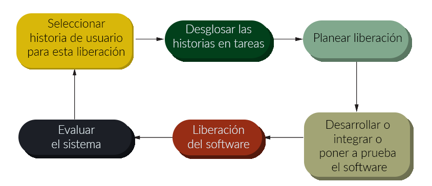

Programación extrema
Es llamado extremo porque llevó al límite lo que se conocía como el método iterativo, en un mismo día se pueden presentar varias versiones de un sistema.

En este método los requerimientos se les llama historias de usuario, que a su vez el equipo de trabajo subdivide en tareas. Si llegan a cambiar los requerimientos las historias no implementadas son desechadas y se crean nuevas. Hay ocasiones en que se requiere diseñar la arquitectura del sistema o la documentación, en ese caso se generan versiones que no producen código y que solo se enfocan en lo anterior, se les conoce con el nombre de picos.
Al principio se desarrolla una versión mínima, ya sea con lo más urgente o lo más útil para el cliente. Relacionado con esto primero se elabora un diseño simple y se va construyendo sobre el.
El equipo de desarrollo debe de asegurarse que el código está optimizado, por esta razón se prioriza la refactorización del código para mantenerlo simple y mantenible.
Los desarrolladores trabajan en parejas (no siempre las mismas) , así uno puede comprobar el trabajo del otro, y cuando se llegue a requerir la creación de una prueba esta sea imparcial. Esto tiene numerosas ventajas; por una parte el equipo se hace responsable de todo el sistema y el equipo debe sacar adelante su tarea y cualquier programador debe poder modificar cualquier función a través de todo el sistema. Los dos verifican su trabajo mutuamente y los errores se detectan más rápido. Favorece la refactorización del código, pues es algo que le conviene a todas las partes del proyecto. Inclusive a pesar de que se pueda disminuir la productividad en parejas los beneficios siguen siendo mayores, reducen los riesgos y distribuyen la carga.
En cuanto los desarrolladores han terminado una tarea esta se integra a la nueva versión, siempre y cuando se cumplan todas las pruebas, estas versiones no deben consumir mucho tiempo, normalmente dos semanas. Para validar que la versión es satisfactoria debe estar in situ un cliente para corroborarlo y si no es satisfactoria se desecha y se pasa para la siguiente versión.
A diferencia de los métodos tradicionales, aquí no se diseña previendo el futuro pues los ciclos de vida de estos sistemas son muy cortos y no vale la pena el esfuerzo.
Un contrapeso de la programación extrema es que poco a poco corrompe el sistema y lo vuelve más difícil de cambiar, más si no hay una buena refactorización del código. Por esto, el código debe ser de fácil comprensión y con una alta simplicidad.
En la programación extrema el código se prueba conforme a las pruebas diseñadas al principio después con cada historia se van agregando pruebas y el cliente a su vez agrega las pruebas que considere necesarias. Con todo esto se genera un marco de pruebas automatizadas que comprueban que todo esté correcto para cada versión del sistema.